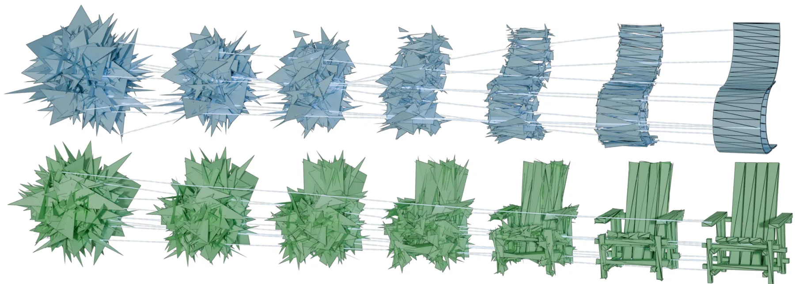
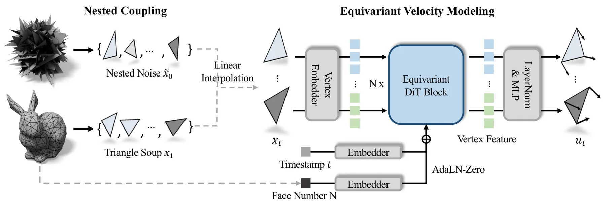
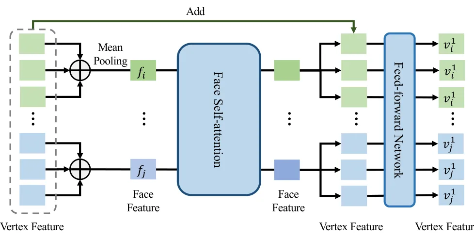
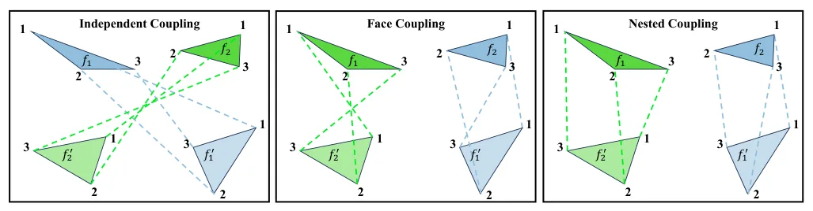
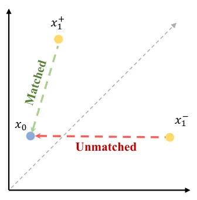
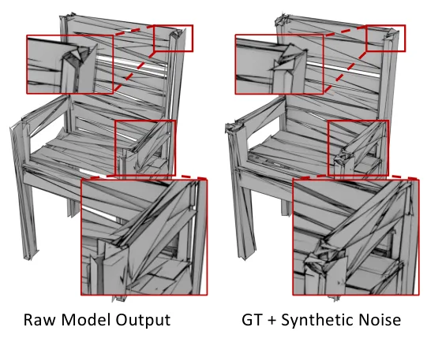
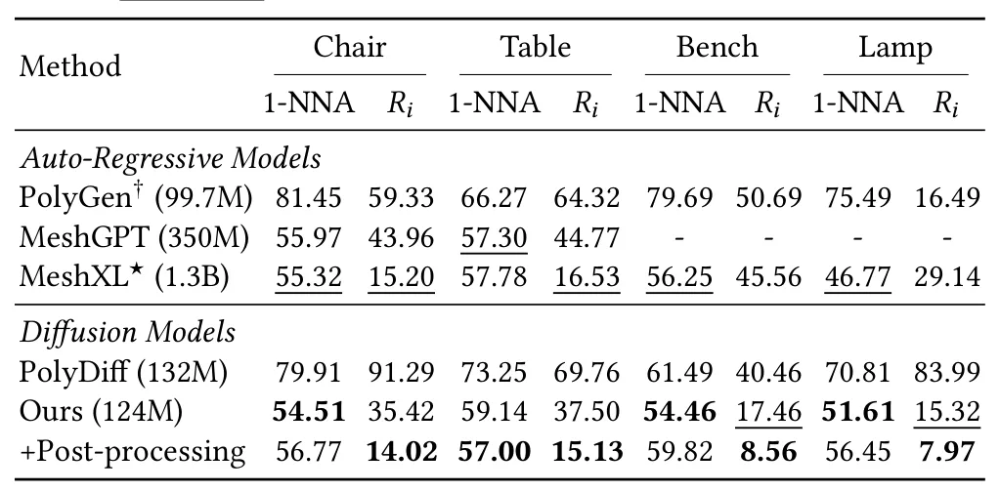
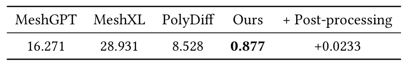

MeshFlow：基于等变流匹配的网格生成MeshFlow: Mesh Generation with Equivariant Flow Matching
直接处理三维网格表示和生成效率，方法中的置换等变性对三维几何建模有参考价值。
一句话工作总结
以显式对称性为核心的直接网格生成方法，适合跟踪三维表示生成、网格先验和高效推理方向，但它更偏生成而非传感器重建。
摘要
MeshFlow 将三角网格作为三角形集合直接生成，避免把网格序列化为很长的自回归序列。模型采用满足面置换不变性和面内顶点置换不变性的等变最优传输流匹配，并改造 Diffusion Transformer 以建模速度场；最优传输训练目标用于消除破坏对称性的监督信号。论文报告推理速度约提升 18 倍。
Meshes are among the most common 3D scene representations, but directly generating meshes is challenging because the representation contains important symmetries, including permutation invariance of faces and vertices. MeshFlow learns to generate triangle meshes directly as triangle soups, avoiding the need to serialize meshes into long autoregressive sequences. We adopt equivariant optimal-transport flow matching models that respect the key symmetries of triangle soups: arbitrary permutations of faces and permutations of the vertices within each face. Toward this goal, we propose a simple yet effective modification to the Diffusion Transformer architecture, resulting in a scalable network capable of modeling a velocity field while maintaining the desired equivariance. We further introduce an optimal-transport-based training objective that improves convergence by eliminating supervision signals that violate these symmetries. MeshFlow achieves mesh quality comparable to state-of-the-art autoregressive mesh generators while providing about an 18$\times$ speedup during inference. Project page is at https://qiisun.github.io/MeshFlow/.
中文解读摘录
- 中文名：TopoSurfel：连接高斯曲面元与网格的闭环表面重建
- 方向：3DGS、表面重建、网格、可微几何；代码链接见论文页。
- 要点：以不可训练的可微等值面提取构造连续代理网格，再用网格引导曲面元演化，结合法线对齐和几何感知密度控制抑制漂浮点、填补孔洞，并以空间感知混合重初始化增强大场景稳定性。
- 判断：今日与三维重建主线最直接相关，值得优先阅读其网格提取、优化稳定性和复杂场景实验。
图表/页面预览
{kind=link}

{kind=link}

{kind=link}

{kind=link}

{kind=link}

{kind=link}

{kind=link}

{kind=link}
